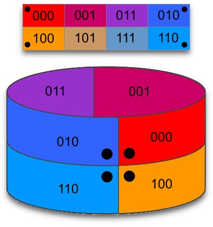
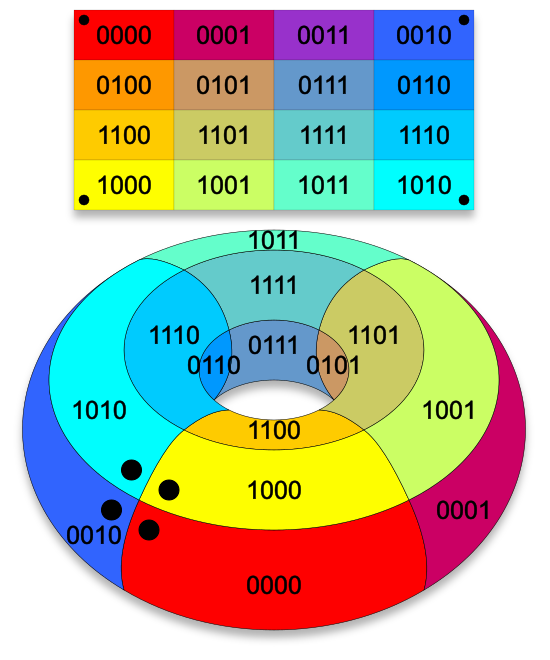

Licenca
To delo je na voljo pod pogoji slovenske licence Creative Commons 2.5:
priznanje avtorstva - nekomercialno - deljenje pod enakimi pogoji.
Celotna licenca je na voljo na spletu na naslovu http://creativecommons.org/licenses/by-nc-sa/2.5/si/. V skladu s to licenco je dovoljeno vsakemu uporabniku delo razmnoževati, distribuirati, javno priobčevati, dajati v najem in tudi predelovati, vendar samo v nekomercialne namene in ob pogoju, da navede avtorja oziroma avtorje in izdajatelja tega dela. Če uporabnik delo predela, kar pomeni, da ga spremeni, preoblikuje, prevede ali uporabi to delo v svojem delu, lahko predelavo dela ponudi na voljo le pod pogoji, ki so enaki pogojem iz te licence oziroma pod enako licenco.

Minimizacija z grafično metodo
Sosednost celic v Karnaughjevem diagramu morda na prvi pogled ni čisto jasna, zato jo bomo skušali v nadaljevanju predstaviti oziroma pojasniti bolj podrobno. Pri Karnaughjevih diagramih ene in dveh spremenljivk ni težav, sajo so vse celice sosedne. Več težav je pri razumevanju sosednosti celic pri Karnaughjevih diagramih treh in štirih spremenljivk.
Pri Karnaughjevem diagramu treh spremenljivk si lahko predstavljamo, da diagram v prostoru zvijemo tako, da dobimo valj. Tako lahko enostavno opazimo, da so celice $m_0$, $m_2$, $m_4$ in $m_6$ res sosedne. Podobno si lahko predstavljamo, da Karnaughjev diagram štirih spremenljivk v prostoru najprej zvijemo v valj, nato pa ta valj zvijemo tako, da dobimo torus – »krof z luknjo v sredini«. Enostavno lahko opazimo, da so celice $m_0$, $m_2$, $m_8$ in $m_{10}$ res sosedne.
Sosednost Karnaughjevih diagramov treh in štirih spremenljivk prikazujejo sliki in animacija.



Zdaj razumemo, kako so sestavljeni Karnaughjevi diagrami za različno število vhodnih spremenljivk (od ena do štiri in več). V nadaljevanju pa si bomo ogledali, kako so Karnaughjevi diagrami povezani s pravilnostnimi tabelami ter kako jih lahko uporabimo za minimizacijo oziroma poenostavitev logičnih funkcij.
Logično vezje želimo poenostaviti v najcenejšo obliko z znižanjem stroškov tako, da odpravimo nepotrebne komponente logičnega vezja. Najcenejšo obliko definiramo kot tisto, za katero potrebujemo najmanjše število logičnih vrat z najmanjšim številom vhodov na posamezna logična vrata.
Poenostavitev z Boolovo algebro je dejansko hitrejša od grafične metode s Karnaughjevimi diagrami za probleme, ki vključujejo dve ali eno vhodno spremenljivko. Pri treh vhodnih spremenljivkah je poenostavitev z Boolovo algebro še kar uporabna, a nekoliko počasnejša od grafične metode. Pri štirih vhodnih spremenljivkah pa poenostavitev z Boolovo algebro vzame preveč časa – poenostavitev s Karnaughjevimi diagrami je lažja in hitrejša.